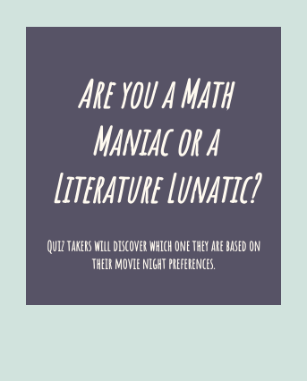

This is an image of a crochet heart I made a few months ago. There are curls of crochet pastel multicolored yarn bursting out of the center, representing one's individuality and passion bursting out of their heart in the emotional sense of the word.

This is my personality quiz! With just three questions, it is the perfect quiz to take when you are in a pinch. It is my first use of javascript.

This is my activist toolkit project. It brings attention to dangers of fast fashion, plastic-based fabrics, and the current fashion industry, while also informing the reader about actions they can take towards a more sustainable future.